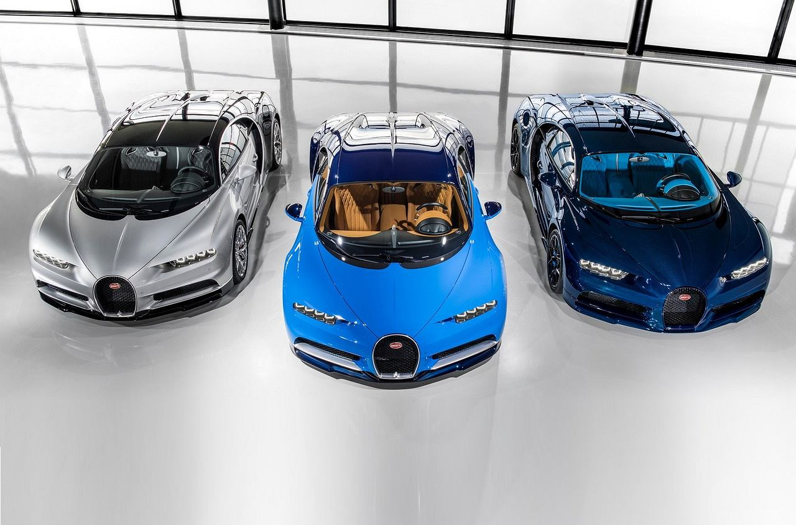
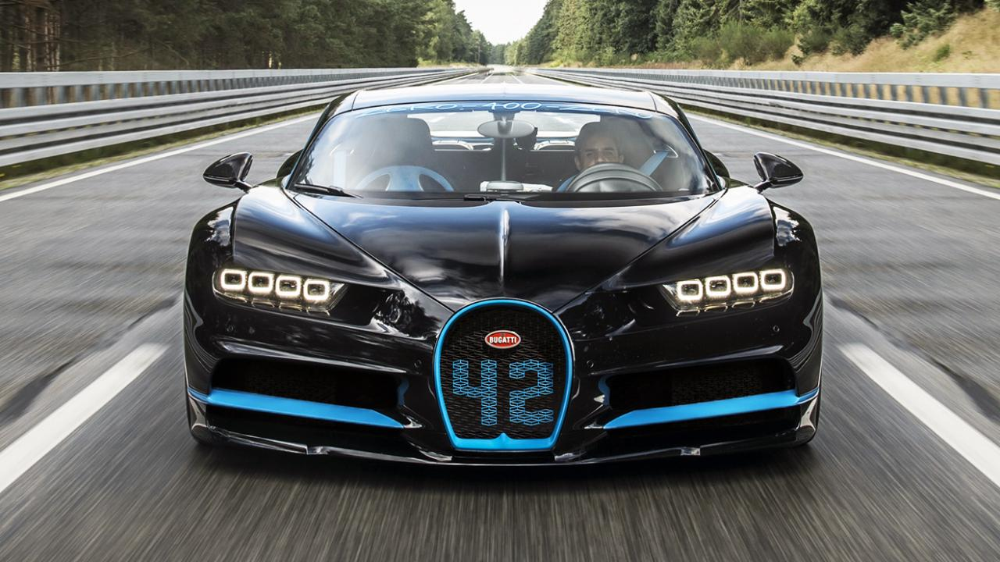
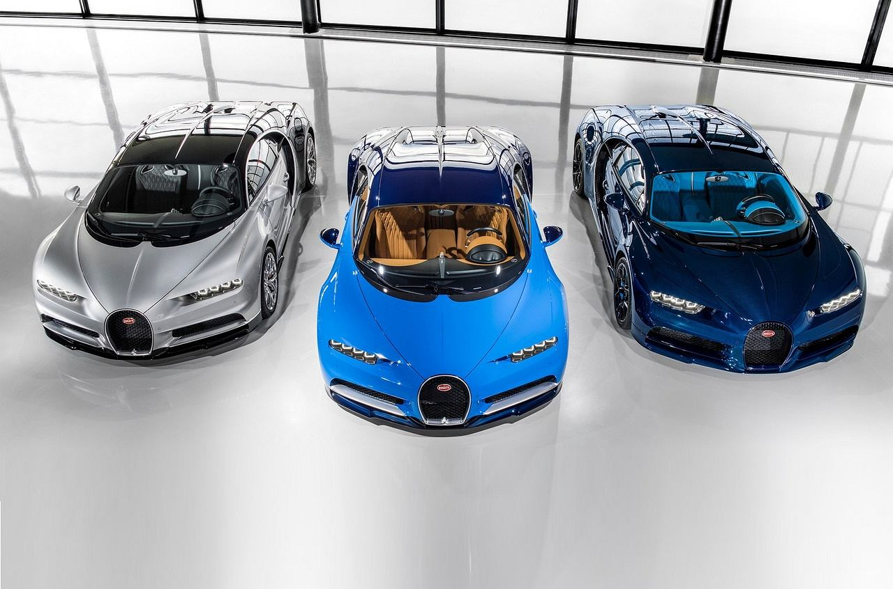
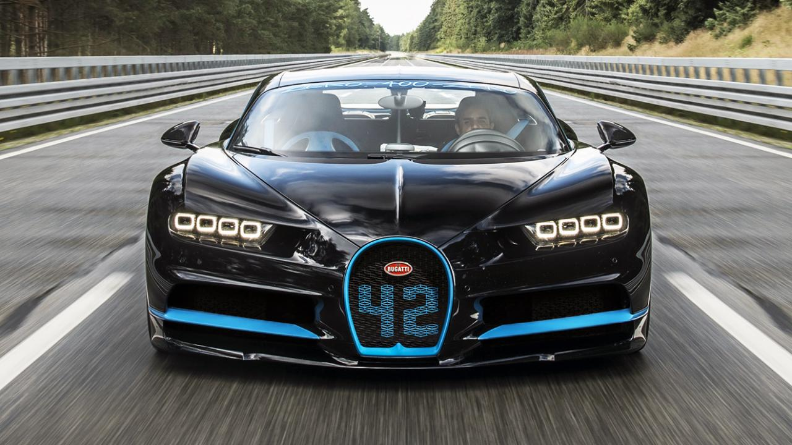
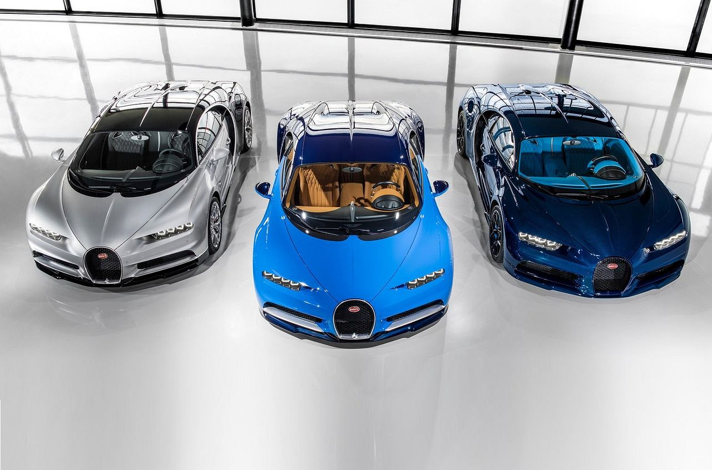
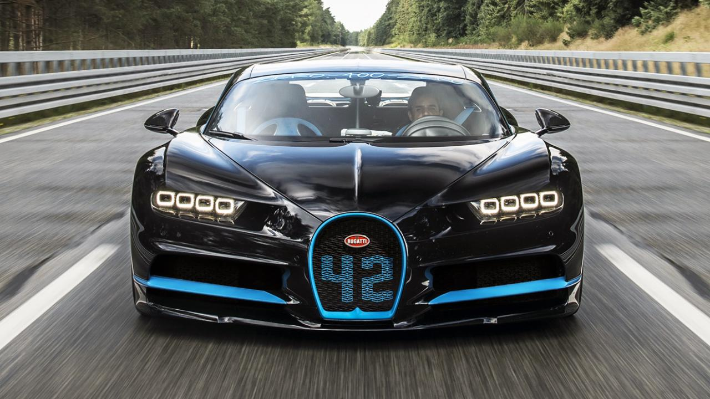

| Former Type | Private |
|---|---|
| Speed | 254mph |
| Founder | Volkswagen, Ettore Bugatti |
| Founded | 1909; 109 years ago |
| Headquaters | Molsheim, Alsace, France |
| Class type | Sports cars |
| body type | 2 door |


Automobiles Ettore Bugatti was a French car manufacturer of high-performance automobiles, founded in 1909 in the then German city of Molsheim, Alsace by Italian-born Ettore Bugatti. Bugatti cars were known for their design beauty and for their many race victories. The death of Ettore Bugatti in 1947 proved to be the end for the brand, and the death of his son Jean Bugatti in 1939 confirmed there was nobody that could lead the factory. There were only 8,000 cars were mare. The company struggled financially, and released one last model in the 1950s, before eventually being purchased for its airplane parts business in the 1960s.
The company enjoyed many victories in early Grand Prix motor racing which took place in in 1929 a privately entered Bugatti won the first ever Monaco Grand Prix. Racing success culminated with driver Jean-Pierre Wimille winning the 24 hours of Le Mans twice. Bugatti cars were extremely successful in racing. The Bugatti Type 35 was the most successful racing car of all time, with over 2,000 wins. Bugattis won races in Targa Florio for five years straight from 1925 through 1929.
|
|
|
The Volkswagen Group W16 engine as configured for the Bugatti Veyron EB16.4 is a 16 cylinder 64 VALVES quad-turbocharged engine with four valves per cylinder. The engine is 71 centimetres long, and weighs about 400 kilograms (882 lb). The Chiron's top speed is set to 420 km/h (261 mph) for safety reasons meaning there can b more added to it. And this makes Bugatti the 3rd most fastest car in the world but in the Guinness World Record Bugatti is the fastest car.